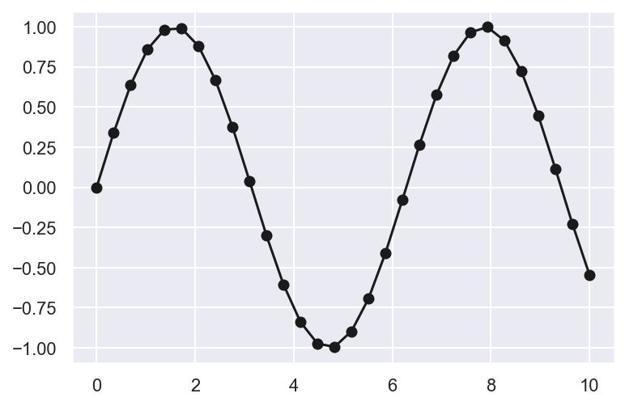
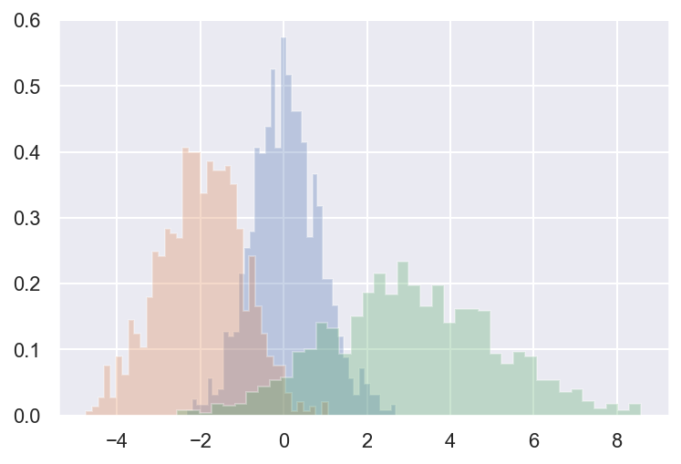

Matplotlib and Seaborn¶
import numpy as np
import matplotlib
import matplotlib.pyplot as plt
import seaborn as sns
# Setup plots
%matplotlib inline
%config InlineBackend.figure_format = 'retina'
sns.set()
# Plot a single function
x = np.linspace(0, 10, 100)
plt.plot(x, np.cos(x))
[<matplotlib.lines.Line2D at 0x1a23a09f90>]
# Import and init Seaborn
import seaborn as sns
sns.set()
# Same function, better looks!
plt.plot(x, np.cos(x))
[<matplotlib.lines.Line2D at 0x1a23cb5190>]

# Plot a scatter plot
x = np.linspace(0, 10, 30)
plt.plot(x, np.sin(x), '-ok');

# Plot an histogram of 3 distributions
x1 = np.random.normal(0, 0.8, 1000)
x2 = np.random.normal(-2, 1, 1000)
x3 = np.random.normal(3, 2, 1000)
kwargs = dict(histtype='stepfilled', alpha=0.3, density=True, bins=40)
plt.hist(x1, **kwargs)
plt.hist(x2, **kwargs)
plt.hist(x3, **kwargs);

# Load the Iris dataset
iris = sns.load_dataset("iris")
# Plot the multidimensional relationships among the samples
sns.pairplot(iris, hue='species', height=2.5);
